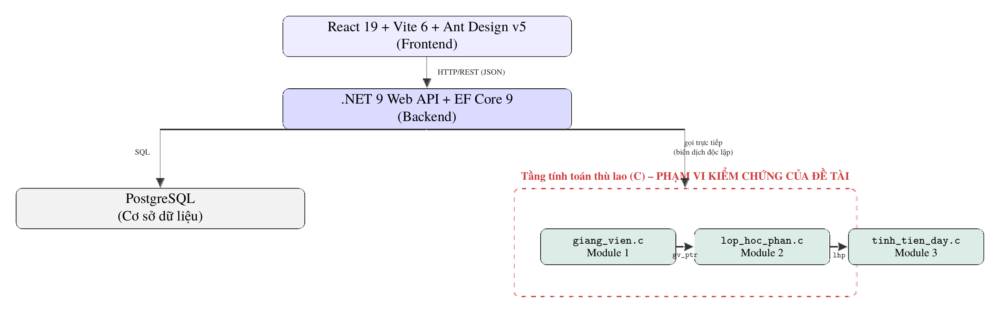
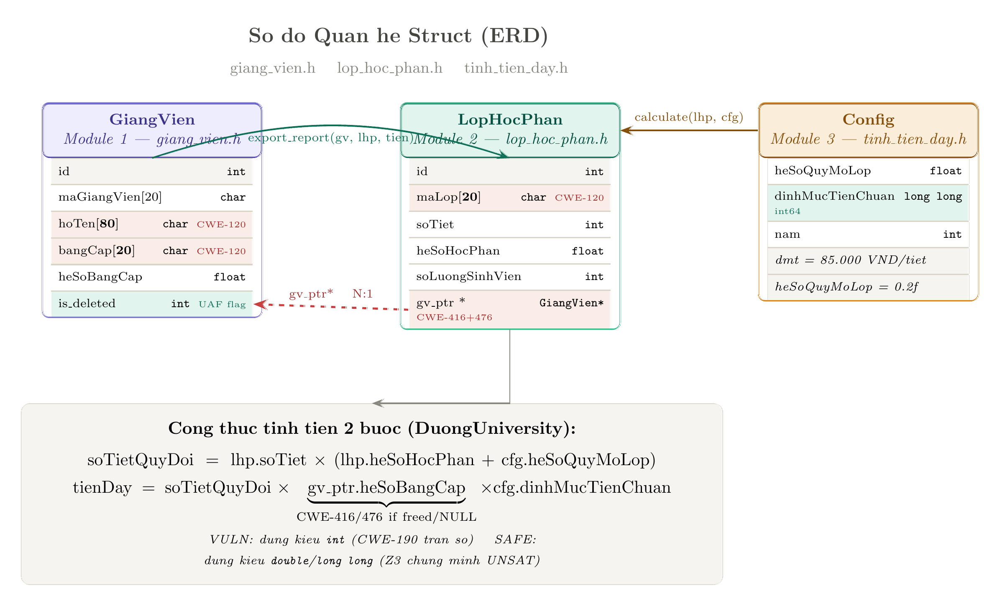
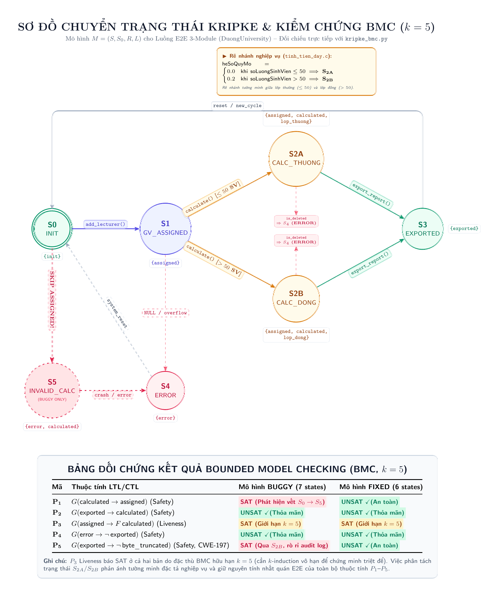
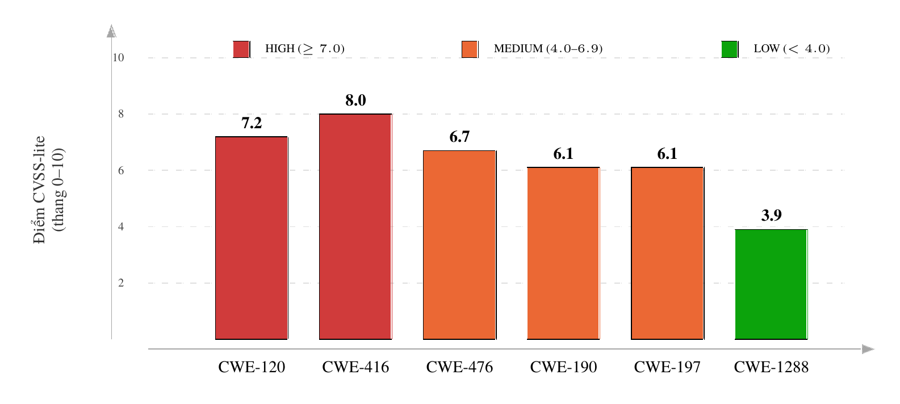

Bốn phương pháp kiểm chứng an toàn bộ nhớ & dữ liệu áp dụng lên module tính lương giảng viên (ch2_memsafe) của DuongUniversity Management System — từ mô hình hoá hình thức đến fuzzing thực thi. Toàn bộ số liệu trên trang này lấy trực tiếp từ log thực thi trong logs/, không phải minh hoạ.
Cùng một module C (quản lý giảng viên → lớp học phần → tính lương) được soi bằng 4 lăng kính khác nhau, theo đúng thứ tự "trừu tượng → cụ thể" của kiểm chứng phần mềm: Chương 1 mô hình hoá hành vi hệ thống thành đồ thị trạng thái rồi chứng minh toán học (không chạy code) xem có vi phạm quy tắc nghiệp vụ không; Chương 2 quét trực tiếp mã nguồn C tìm mẫu lỗi đã biết mà không cần biên dịch; Chương 3 dùng bộ giải ràng buộc Z3 để chứng minh công thức tính lương an toàn hay không trên toàn miền giá trị (không phải test vài mẫu); Chương 4 thực sự chạy chương trình đã biên dịch với hàng trăm input để xem lỗi có biểu hiện ra ngoài hay không. Bốn góc nhìn này bổ sung cho nhau: cái Chương 2 bỏ sót thì Chương 1 vẫn có thể phát hiện qua mô hình, và ngược lại.
| Testing (Ch4 + test truyền thống) | Formal (Ch1, Ch3) | |
|---|---|---|
| Cách tiếp cận | Thử N trường hợp cụ thể | Xét toàn bộ không gian giá trị/trạng thái |
| Khi không thấy lỗi | "Chưa thấy lỗi" — confidence tăng dần theo N | "Chứng minh không có lỗi" — UNSAT tuyệt đối, không phụ thuộc N |
| Phụ thuộc | Phụ thuộc bộ input đã chọn để thử | Độc lập với input cụ thể — quantify trên biến ký hiệu |
| Kết luận | Xác suất / thống kê | Tuyệt đối trong phạm vi ràng buộc đã khai báo |
Ví dụ ngay trong đề tài: fuzzer_blackbox.py chạy 200 lần trên bản vá cho 0/200 crash — đó là "chưa thấy lỗi sau 200 lần thử". Còn Check 2 (smt_verify.py) chứng minh UNSAT cho tràn số 64-bit trên toàn miền ràng buộc — đó là "chứng minh không có lỗi", không phụ thuộc đã thử bao nhiêu lần. Hai loại bằng chứng này bổ sung, không thay thế nhau.
Quy trình 8 bước tham số → bắt buộc/tùy chọn → tổ hợp → rời
rạc hóa thành trạng thái → ràng buộc giữa tham số → statement → REQ → test case áp dụng lên
calculate_e2e_salary(): 9 tham số gốc → đối chiếu với code thật lộ ra
2 tham số phân loại sai (cfg->heSoQuyMoLop là dead field không hề được đọc;
soLuongSinhVien mới thực sự quyết định hệ số quy mô lớp, không phải field cấu hình) → 8 tham số
bắt buộc thật → 15.000 tổ hợp thô → 9 ràng buộc liên tham số → 15 statement → 36 REQ (10 REQ tổng
quan + 26 REQ con REQ-X.Y). Bảng dưới đây là tầng tổng quan; xem đầy đủ REQ-X.Y trong báo cáo .tex.
| Mã REQ | Loại | Ưu tiên | Nội dung | Kiểm chứng chính |
|---|---|---|---|---|
| REQ-1 | Safety | HIGH | Không được tính tiền khi chưa phân công giảng viên | Ch1 BMC P₁ |
| REQ-2 | Safety | HIGH | Không được xuất báo cáo khi chưa tính tiền | Ch1 BMC P₂ |
| REQ-3 | Memory | HIGH | Các buffer chuỗi không tràn khi input vượt giới hạn (CWE-120) | Ch2 strcpy; Ch4 Target 1/2 |
| REQ-4 | Memory | HIGH | gv_ptr không được truy cập sau khi free() (CWE-416 UAF) |
Ch2 dangling_free; Ch3 Check 3 |
| REQ-5 | Memory | HIGH | gv_ptr phải được kiểm tra NULL trước khi đọc (CWE-476) |
Ch2 unchecked_nested_deref; Ch4 Target 4 |
| REQ-6 | Memory | HIGH | Phép nhân dồn không tràn số nguyên 32-bit (CWE-190) | Ch3 Check 1/2 |
| REQ-7 | Functional | MEDIUM | Công thức tính thù lao 2 bước đúng với mọi input hợp lệ | Ch3 Check 1/2 — thiếu oracle tự động (xem Trace) |
| REQ-8 | Integrity | HIGH | Đóng gói audit log không sai lệch kiểu char (CWE-197) |
Ch3 Check 4/5/6; Ch4 BVA 17/17 |
| REQ-9 | Functional | MEDIUM | bangCap phải thuộc danh mục hợp lệ (CWE-1288) |
Ch3 Check 7 — thiếu oracle tự động (xem Trace) |
| REQ-10 | Memory | HIGH | Con trỏ cfg (Config*) phải kiểm tra NULL trước khi đọc |
Ch2 dòng 30 (tinh_tien_day.c) |
ch2_memsafe/nfr_check.py
| Mã | Thuộc tính | Nội dung | Kết quả |
|---|---|---|---|
| NFR-1 | Hiệu năng | Thời gian tính lương 1 lớp < 10ms (không tính I/O) | PASS — 0,000014 ms/lần (10.000 lần lặp,
QueryPerformanceCounter) |
| NFR-2 | Ổn định bộ nhớ | Không rò rỉ bộ nhớ khi lặp E2E ≥ 10.000 lần | PASS — drift 4 KB / 10.000 lần tạo-xoá (ngưỡng 1024 KB) |
| NFR-3 | Tính di động | Biên dịch sạch (0 warning -Wall) trên ≥ 2 toolchain |
PASS — GCC/UCRT64 và Clang64 (§Ch2.1) |
| NFR-4 | Chịu lỗi (Robustness) | Input vượt đặc tả phải bị từ chối có kiểm soát, không crash | PASS — 0/200 crash bản FIXED; 146/200 chặn an toàn (CWE-197) |
| NFR-5 | Toàn vẹn (Audit) | 2 soLuongSinhVien khác nhau không được map trùng 1 byte |
PASS trên FIXED — Check 6/Target 7 tái hiện va chạm trên VULN, FIXED chặn trước khi ép kiểu |
| NFR-6 | Tính tất định | Cùng input, kết quả BMC/SMT/fuzzing nhất quán mọi lần chạy | PASS một phần — BMC/SMT tất định tuyệt đối; số đếm crash fuzzing dao động 60–72/200 do ASLR Windows (kết luận định tính không đổi) |
| NFR-7 | Không có dead field | Mọi field cấu hình phải được ít nhất 1 hàm đọc lại | FAIL — 2/3 field Config chết:
heSoQuyMoLop, nam |
Khác với miền giá trị nghiệp vụ (vd soLuongSinhVien
∈[0,300], do người phân tích đặc tả đặt ra), bảng dưới là giới hạn do chính cách hiện thực áp
đặt (kích thước buffer C, phạm vi kiểu dữ liệu). Phần lớn CWE của đề tài phát sinh đúng ở khoảng cách
giữa 2 miền này — ví dụ CON-5 (char chỉ an toàn tới 127) trong khi nghiệp vụ cho phép tới 300.
| Mã | Ràng buộc kỹ thuật | Vị trí trong code | REQ liên quan |
|---|---|---|---|
| CON-1 | Buffer hoTen tối đa 80 byte |
giang_vien.h:4 #define MAX_NAME 80 |
REQ-3.1 |
| CON-2 | Buffer maGiangVien tối đa 20 byte (hằng số trực tiếp) |
giang_vien.h:9 | REQ-3.3 |
| CON-3 | Buffer bangCap tối đa 20 byte (hằng số trực tiếp) |
giang_vien.h:11 | REQ-3.3 |
| CON-4 | Buffer maLop tối đa 20 byte |
lop_hoc_phan.h:6 #define MAX_MALOP 20 |
REQ-3.2 |
| CON-5 | Kiểu char (signed 8-bit) chỉ an toàn trong [0,127] |
tinh_tien_day.c:67,75 | REQ-8.1–8.5 |
| CON-6 | Kiểu int 32-bit giới hạn kết quả nhân dồn (bản VULN) |
tinh_tien_day.c:12–13 | REQ-6.1–6.4 |
| CON-7 | gv_ptr cho phép NULL — C không có kiểu non-null |
lop_hoc_phan.h:15 | REQ-1.0, REQ-5.1/5.2 |
| CON-8 | cfg (Config*) cho phép NULL, cùng nguyên nhân như CON-7 |
tinh_tien_day.h:17,20 | REQ-10.1/10.2 |
| CON-9 | GiangVien cấp phát/giải phóng thủ công — không RAII/GC |
giang_vien.c:35 | REQ-4.1–4.4 |
| CON-10 | Không có cờ "đã tính lương" — thứ tự chỉ đảm bảo bởi trình tự gọi hàm viết tay | tinh_tien_day.h:23 | REQ-2.0 |
| CON-11 | Ngưỡng quy mô lớp (50 SV) là literal cứng, không phải hằng số có tên | tinh_tien_day.c:9,41 | REQ-7.6/7.7 |
| CON-12 | soTiet chỉ có guard 1 chiều (kẹp về 0 nếu ≤0), không có trần ≤500 |
lop_hoc_phan.c:31 | REQ-7.3–7.5 |
| CON-13 | bangCap là chuỗi tự do, không phải enum |
giang_vien.c:19–23 | REQ-9.1/9.2 |
Đúng như kỳ vọng: kích thước buffer
{80, 20, 20} (CON-1, CON-4, và CON-2/CON-3) khớp tường minh, từng con số với 3 định nghĩa struct
thật (giang_vien.h, lop_hoc_phan.h) — không phải số minh hoạ. CON-7–13 (nhóm mới) là
giới hạn về biểu diễn trạng thái (C không có non-null/enum/RAII), khác hẳn nhóm CON-1–6 vốn là giới hạn
kích thước/kiểu số.
Hệ thống đầy đủ gồm Frontend React 19 + Vite 6 + Ant Design v5, Backend .NET 9 Web API + EF Core 9, và PostgreSQL. 3 module C mục tiêu của đề tài đóng vai trò tầng tính toán thù lao tốc độ cao, biên dịch độc lập với backend .NET — đây chính là điểm mà một lỗi an toàn bộ nhớ có thể xảy ra mà không được GC/bounds-checking tự động của .NET bảo vệ. Đề tài chỉ kiểm chứng 3 module C (viền đỏ nét đứt); phần Frontend/Backend/DB chỉ để xác định đúng bối cảnh, không nằm trong phạm vi kiểm chứng.

.NET 9 Backend -> rẽ 2 nhánh PostgreSQL và tầng tính toán C viền đỏ gồm 3 module giang_vien.c, lop_hoc_phan.c, tinh_tien_day.c">diagrams/diagram6_e2e_architecture.tex (TikZ), khớp §3.1 báo cáo .tex. Đường rẽ
thứ hai từ Backend (gọi trực tiếp, biên dịch độc lập) là ranh giới an toàn bị mất tác dụng của .NET — lý do 3
module C là đối tượng kiểm chứng duy nhất của đề tài.
3 struct C liên kết qua con trỏ thô — nền tảng mà cả 4 chương phía dưới cùng kiểm chứng. Ô tô màu là trường dữ liệu liên quan trực tiếp tới 1 CWE đã tìm thấy.

diagrams/diagram2_entity_relationship.pdf. 4 trường tô đỏ
(hoTen, bangCap, maLop, gv_ptr) là đúng 4 trường dữ liệu gây CWE-120/416/476 đã quét thấy ở Chương 2;
dinhMucTienChuan dùng long long (int64) là bản vá cho CWE-190 đã chứng minh UNSAT ở
Chương 3.
Kripke structure là gì? Một bộ 4 thành phần M = (S, S₀, R, L): tập trạng thái
S, trạng thái khởi tạo S₀, quan hệ chuyển tiếp R (trạng thái nào được
phép đi tới trạng thái nào), và hàm gán nhãn L (mỗi trạng thái mang những thuộc tính gì, ví dụ
"đã phân công", "đã tính tiền"). Đây là cách toán học biểu diễn "mọi luồng thực thi có thể xảy ra" của hệ
thống, thay vì chỉ một vài kịch bản test cụ thể.
Bounded Model Checking (BMC): thay vì duyệt mô hình vô hạn bước, ta "duỗi" (unroll)
quan hệ chuyển tiếp đúng k=5 bước rồi nhờ Z3 tìm xem có tồn tại một chuỗi 5 bước nào vi phạm
thuộc tính an toàn hay không. Nếu Z3 trả lời SAT — nó vừa tìm ra một phản ví dụ cụ thể
(counterexample), tức là lỗi có thật. Nếu trả lời UNSAT — không tồn tại vi phạm nào trong phạm vi 5
bước đó (chứng minh có điều kiện, không phải "an toàn tuyệt đối mãi mãi").

diagrams/diagram1_state_transition.pdf, dựng từ
build_duong_university_kripke() — viền nét đứt đỏ = chỉ tồn tại/vi phạm ở bản BUGGY.
S5_INVALID_CALC là đường tắt Z3 tìm ra cho phản ví dụ P1 (nhảy từ S0 sang tính tiền, bỏ qua bước phân
công). Bảng P1-P4 trong ảnh khớp với log thật ở mục dưới; thuộc tính P5 (CWE-197, nhãn
byte_truncated trên S3 ở bản BUGGY) được thêm sau nên chưa có trong ảnh gốc, và trạng thái
S2_SALARY_CALC trong ảnh nay đã tách thành S2A_CALC_THUONG/S2B_CALC_DONG (theo ngưỡng
soLuongSinhVien > 50 thật trong tinh_tien_day.c) — model hiện có 6/7 trạng thái
(FIXED/BUGGY) thay vì 5/6, không đổi kết quả SAT/UNSAT nào — xem bảng đầy đủ 5 thuộc tính ngay bên dưới.
| Thuộc tính | Ý nghĩa | BUGGY | FIXED |
|---|---|---|---|
| P1 · Safety | G(calculated → assigned) | SAT — vi phạm | UNSAT — an toàn |
| P2 · Safety | G(exported → calculated) | UNSAT — an toàn | UNSAT — an toàn |
| P3 · Liveness | G(assigned → F calculated) | SAT — hạn chế BMC | SAT — hạn chế BMC |
| P4 · Safety | G(error → ¬exported) | UNSAT — an toàn | UNSAT — an toàn |
| P5 · Safety | G(exported → ¬byte_truncated) — CWE-197 | SAT — vi phạm | UNSAT — an toàn |
pack_class_size_byte_VULN() nên S3_EXPORTED mang nhãn byte_truncated (SAT, vi phạm CWE-197);
bản FIXED dùng guard trong pack_class_size_byte_SAFE() nên không bao giờ vi phạm (UNSAT).
strcpy hoặc free() theo cách thiếu kiểm tra.Công cụ này quét trực tiếp mã nguồn C dạng văn bản — không biên dịch, không chạy
chương trình — tìm 5 mẫu lỗi: gọi strcpy không giới hạn độ dài (CWE-120), free() mà
không huỷ liên kết con trỏ ở module khác (CWE-416), truy cập con trỏ lồng gv_ptr-> chưa kiểm
tra NULL (CWE-476), ép kiểu (int) trong phép nhân có nguy cơ tràn số (CWE-190), và ép kiểu
(char) không có guard phạm vi đứng trước trong cùng hàm (CWE-197).
Một lỗi thật đã được tìm và vá trong chính công cụ này: heuristic "đã được bảo vệ" ban
đầu so khớp chuỗi thô (NULL, if (!) trên cả phần comment giải thích lỗi — vì
comment tiếng Việt mô tả đúng lỗi lại vô tình chứa đúng các từ khoá đó, khiến scanner tưởng nhầm code đã an
toàn và bỏ sót hoàn toàn 2 lỗi CWE-416/476 bên dưới. Đã sửa bằng hàm _code_part() cắt bỏ
phần sau // trước khi so khớp.
strcpy(gv->maGiangVien, maGV);CWE-120strcpy(gv->hoTen, hoTen);CWE-120strcpy(gv->bangCap, bangCap);CWE-120free(gv); // khong cap nhat con tro Module 2CWE-416strcpy(lhp->maLop, maLop);CWE-120int soTietQuyDoi = (int)(lhp->soTiet * ...);CWE-190(int)lhp->gv_ptr->heSoBangCap ...CWE-190lhp->gv_ptr->heSoBangCap (chưa kiểm tra NULL)CWE-476return (char)soLuongSinhVien;CWE-197[CLEAN] Không phát hiện vi phạm nào*_VULN; file
main_fixed.c (chỉ gọi hàm *_SAFE) sạch tuyệt đối — chứng minh scanner phân biệt
đúng code lỗi và code đã vá, không phải false positive tràn lan.
pack_class_size_byte_VULN() và
pack_class_size_byte_SAFE() cùng nằm trong tinh_tien_day.c — scanner chỉ báo
động đúng hàm VULN (không có guard) mà không báo nhầm hàm SAFE (có guard if (soLuongSinhVien < 0
|| > 127) đứng trước), xác nhận cơ chế xét theo phạm vi hàm hoạt động đúng, không chỉ dựa vào
tên file như 2 rule cũ (is_fixed_file).
cppcheck thật (Lab 4), không thay thế.Bổ sung: bằng chứng động (không chỉ đọc code suy luận). Toàn bộ phần trên là tĩnh — để trả lời "giả định chương trình chạy được thì bộ nhớ dùng ra sao qua từng bước", đã biên dịch cùng 1 luồng E2E 7 bước (nhập → tạo GV → tạo lớp → tính lương → ép byte → xoá GV → xuất báo cáo) thành 2 bản nhị phân khác nhau và thực sự chạy chúng.
Chương trình đọc thành công một vùng nhớ đã bị free() ở bước ngay
trước đó mà không có bất kỳ tín hiệu bất thường nào — đây chính là lý do CWE-416 nguy hiểm trong thực
tế: không crash không có nghĩa là an toàn.
Không phải chương trình tự báo cáo — ASan (công cụ tách biệt hoàn toàn khỏi logic
chương trình) tự phát hiện và chặn đứng tiến trình, chỉ đúng ra vùng nhớ 132 byte của
GiangVien, offset 24 byte trùng khớp field hoTen.
Bản FIXED (main_fixed.c, huỷ liên kết gv_ptr = NULL trước khi free) chạy sạch trên cả 2 bản — ASan xác nhận 0 vi phạm. Log đầy đủ (kèm toàn bộ call stack + shadow-byte map thật): logs/memory_trace.log.
Khác với test thông thường (thử một vài bộ input), SMT solver chứng minh một mệnh đề
đúng hoặc sai trên toàn miền giá trị hợp lệ cùng lúc. Ở đây: liệu công thức
tổng lương = Σ (số tiết × hệ số) × hệ số bằng cấp × đơn giá có thể tràn số nguyên 32-bit không,
xét trên mọi tổ hợp giá trị doanh nghiệp hợp lý (1-20 lớp, 15-120 tiết, đơn giá 85.000-500.000đ...).
Z3 tự tìm ra bộ giá trị cụ thể này khiến tổng lương vượt INT32_MAX — không phải giả định,
mà là một bộ số thật thoả mãn mọi ràng buộc nghiệp vụ. Đã sửa mô hình dùng đúng
soLuongSinhVien thật thay cho biến tự do heSoQuyMoLop (field chết, không được
tinh_tien_day.c đọc) — kết luận SAT không đổi.
Z3 không tìm được bộ giá trị nào (dù đã nới ràng buộc rộng hơn Check 1) gây tràn — chứng minh long long/double an toàn tuyệt đối trong phạm vi doanh nghiệp.
Mô hình hoá bằng đúng công thức thật trong calculate_e2e_salary_SAFE() (không
phải mệnh đề Boolean trừu tượng tách rời code), rồi chứng minh guard-check không thể bị vượt qua.
Ép kiểu (char) mô phỏng bằng số học modulo 256 wrap dấu — Z3 tìm ra ngay ranh giới two's-complement nơi 128 (hợp lệ, <=300) bị wrap thành -128, khác hoàn toàn giá trị gốc.
Với đúng guard trong pack_class_size_byte_SAFE(), Z3 không tìm được phản ví
dụ nào — chứng minh hình thức rằng bản vá loại trừ hoàn toàn CWE-197, không chỉ vá theo từng test mẫu.
Không chỉ hỏi "có sai không" mà hỏi "có 2 tình huống khác nhau nào bị nhầm thành một không" — Z3 tìm ngay ra cặp 0↔256, đúng lớp lỗi nguy hiểm nhất vì không hề biểu hiện bằng số âm hay crash.
Cùng lớp lỗi "va chạm trạng thái" như Check 6, nhưng ở Module 1: if-chain thật trong
add_lecturer_*() gộp giảng viên CU_NHAN thật và mọi chuỗi bangCap không hợp lệ vào cùng
heSoBangCap=1.0. Khác CWE-197, lỗi này không thể loại trừ bằng cách từ chối (nghiệp vụ cần 1 giá
trị fallback thật) — bản SAFE chỉ thêm được cảnh báo stderr khi fallback xảy ra, không xoá được va chạm.
Black-box fuzzing: sinh input hoàn toàn ngẫu nhiên (tên dài ngẫu nhiên, bằng cấp ngẫu
nhiên, số lượng sinh viên ngẫu nhiên...) rồi chạy thật salary_calc.exe, đếm số lần crash hoặc
sai lệch dữ liệu. White-box fuzzing ở đây là giải trực tiếp 7 ràng buộc Z3 tương ứng 6 lỗ hổng đã biết
trước (Target 6 và 7 cùng minh hoạ CWE-197 ở 2 khía cạnh khác nhau — không phải symbolic execution duyệt
toàn bộ luồng thực thi) — nên nhanh hơn nhiều lần nhưng đổi lại chỉ tìm đúng cái đã biết trước, không tự
khám phá lỗ hổng mới.
Một con số đã từng sai và được sửa: bản gốc in cứng "~982× speedup" — một số cố định không tính từ thời gian chạy thật, nên sai lệch xa mỗi khi tốc độ máy thay đổi. Đã sửa bằng cách đọc thời gian thật từ log Black-box và tính tỉ lệ động tại thời điểm chạy — số liệu dưới đây là con số thật của lần chạy gần nhất, không phải giá trị suy diễn.
Vì sao dùng 17 giá trị biên cố định thay vì để random tự chọn? Fuzzing ngẫu nhiên
(2 biểu đồ trên) có xác suất rất thấp trúng đúng các mốc "chết người" như bội số 256 — nên
run_bva_truncation_test() chạy đúng 17 giá trị thiết kế sẵn theo phân tích lớp tương đương
(quanh mép char: -129/-128/-127/126/127/128/129; quanh mép chu kỳ 256: -256/-255/255/256/257;
và vài giá trị lớp đại cương thực tế: 300, 384), rồi gom nhóm theo byte kết quả thật để tự lộ ra
những bộ giá trị hoàn toàn khác nhau nhưng bị hệ thống hiểu nhầm là một.
| Byte xuất ra | Các soLuongSinhVien khác nhau cho cùng byte này |
|---|---|
| 0 | -256, 0, 256 |
| 1 | -255, 1, 257 |
| -128 | -128, 128, 384 |
| -127 | -127, 129 |
| 127 | -129, 127 |
| -1 | -1, 255 |
Trên salary_calc_fixed.exe: 0 nhóm trùng lặp — cả 17 giá trị biên đều bị chặn an toàn hoặc chấp nhận đúng, không giá trị nào bị ép kiểu sai.
[0,127] của char.
Điểm CVSS-lite tính theo Score = min(Exploitability + Impact, 10), áp dụng AV=Local, AC=Low, PR=None, UI=None cho toàn bộ 6 CWE (chương trình CLI cục bộ, không phải dịch vụ mạng), mức Impact (C/I/A) lấy theo đúng hậu quả đã chứng minh được bằng thực nghiệm ở 4 chương trên — không giả định RCE chưa kiểm chứng.

diagrams/diagram4_cvss_bar.png (TikZ), số liệu khớp bảng dưới đây.| CWE | Vị trí trong đề tài | CVSS-lite | Mức |
|---|---|---|---|
| CWE-416 | Ch2 dangling_free; Ch2.1 ASan heap-use-after-free thật |
8.0 | HIGH |
| CWE-120 | Ch2 strcpy; Ch4 crash 72/200 |
7.2 | HIGH |
| CWE-476 | Ch2 unchecked_nested_deref; Ch4 Target 4 |
6.7 | MEDIUM |
| CWE-190 | Ch1 S₅; Ch3 Check 1 SAT / Check 2 UNSAT | 6.1 | MEDIUM |
| CWE-197 | Ch1 P₅; Ch3 Check 4/6; Ch4 BVA 17/17 | 6.1 | MEDIUM |
| CWE-1288 | Ch2 fallback heSoBangCap=1.0f; Ch3 Check 7 SAT |
3.9 | LOW |
CWE-476/197/1288 cố ý không gán mã
CVE cụ thể vì không xác minh được một CVE thực sự khớp chính xác với bối cảnh đề tài — thà để trống còn hơn
trích dẫn một mã CVE không chắc chắn đúng (xem đầy đủ ví dụ CVE tại BAO_CAO_BTL_SOFTSEC.md).
Các mục CH.1–CH.4 và REQ ở trên trình bày kết quả theo từng chương/kỹ thuật. Bảng dưới tổ chức lại đúng cùng số liệu đó theo chiều ngược lại — theo từng yêu cầu — theo tinh thần Test Case Specification của IEEE 829: mã test case, input/điều kiện, kết quả mong đợi, kết quả thực tế đối chiếu ngược lại log thật, và kết luận. FAIL* trên bản BUGGY/VULN là đúng như thiết kế (bug injection có chủ đích để minh chứng công cụ phát hiện được lỗi thật) — không phải lỗi của test case.
| Mã TC | REQ | Input / Điều kiện | Kỳ vọng | Thực tế (log) | KL |
|---|---|---|---|---|---|
| TC-K1-01 | REQ-1 | BMC P₁, bản BUGGY (nhảy thẳng sang tính tiền) | UNSAT | SAT — phản ví dụ S₀→S₅→S₄ | FAIL* |
| TC-K1-02 | REQ-1 | BMC P₁, bản FIXED | UNSAT | UNSAT | PASS |
| TC-K1-03 | REQ-2 | BMC P₂, cả 2 bản | UNSAT | UNSAT cả 2 bản | PASS |
| TC-K2-01 | REQ-3 | Scanner quét strcpy trên 3 file VULN |
Phát hiện đủ CWE-120 | 5 cảnh báo đúng vị trí | PASS |
| TC-K2-02 | REQ-3 | Scanner quét main_fixed.c |
0 cảnh báo | 0 cảnh báo — [CLEAN] | PASS |
| TC-K4-01 | REQ-3 | White-box Target 1: hoTen dài 81 > CON-1 (80) |
Tìm điều kiện tràn | SAT ở lần thử 1 | FAIL* |
| TC-K4-02 | REQ-3 | White-box Target 2: maLop dài 21 > CON-4 (20) |
Tìm điều kiện tràn | SAT ở lần thử 2 | FAIL* |
| TC-K4-03 | REQ-3 | Black-box 200 lần ngẫu nhiên trên VULN | 0/200 crash | 72/200 crash, 0xC0000374 |
FAIL* |
| TC-K4-04 | REQ-3 | Black-box 200 lần trên FIXED | 0/200 crash | 0/200 crash | PASS |
| TC-K2-03 | REQ-4 | Scanner quét dangling_free trên VULN |
Phát hiện CWE-416 tại giang_vien.c:35 |
Phát hiện đúng vị trí | PASS |
| TC-K4-05 | REQ-4 | White-box Target 3: free(gv) rồi vẫn đọc qua gv_ptr |
Tìm điều kiện UAF | SAT ở lần thử 3 | FAIL* |
| TC-K2-04 | REQ-4 | ASan-VULN: đọc gv->hoTen sau free() |
ASan phải bắt lỗi | heap-use-after-free, offset +24 = hoTen |
FAIL* |
| TC-K2-05 | REQ-4 | ASan-FIXED (gv_ptr=NULL trước free) |
0 vi phạm | 0 vi phạm | PASS |
| TC-K2-06 | REQ-5 | Scanner quét unchecked_nested_deref trên VULN |
Phát hiện CWE-476 tại tinh_tien_day.c:13 |
Phát hiện đúng vị trí | PASS |
| TC-K4-06 | REQ-5 | White-box Target 4: gv_ptr=NULL rồi tính lương |
Tìm điều kiện NULL deref | SAT ở lần thử 4 | FAIL* |
| TC-K3-01 | REQ-6 | Check 1 (Z3): ∃ input hợp lệ tràn int32 | SAT dự kiến (VULN) | SAT — numClasses=20, soTiet=120 | FAIL* |
| TC-K3-02 | REQ-6 | Check 2 (Z3): cùng câu hỏi trên long long |
UNSAT | UNSAT | PASS |
| TC-K4-07 | REQ-6 | White-box Target 5: soTiet=16694179, dmt=2147583020 | SAT dự kiến | SAT ở lần thử 5 | FAIL* |
| TC-K1-04 | REQ-8 | BMC P₅, bản VULN | UNSAT | SAT — S₃ mang nhãn byte_truncated | FAIL* |
| TC-K1-05 | REQ-8 | BMC P₅, bản FIXED | UNSAT | UNSAT | PASS |
| TC-K3-03 | REQ-8 | Check 4 (Z3): ∃ n∈[0,300] ép char sai |
SAT dự kiến | SAT — n=128 → byte=-128 | FAIL* |
| TC-K3-04 | REQ-8 | Check 5 (Z3): cùng câu hỏi với guard [0,127] | UNSAT | UNSAT | PASS |
| TC-K3-05 | REQ-8, NFR-5 | Check 6 (Z3): ∃ a≠b∈[0,300] cùng cho 1 byte | UNSAT mong muốn | SAT — a=0, b=256 cùng byte=0 | FAIL** |
| TC-K4-08 | REQ-8 | Black-box CWE-197, 200 lần trên VULN | 0/200 sai lệch | 120/200 sai lệch (60%) | FAIL* |
| TC-K4-09 | REQ-8 | Black-box CWE-197, 200 lần trên FIXED | 0/200 sai lệch | 0/200 (146/200 chặn an toàn) | PASS |
| TC-K4-10 | REQ-8, NFR-5 | BVA 17 giá trị biên trên VULN | Khớp lý thuyết 17/17; không nên trùng | 17/17 khớp, nhưng lộ 6 nhóm trùng byte | PASS/FAIL** |
| TC-K4-11 | REQ-8, NFR-5 | BVA 17 giá trị biên trên FIXED | 0 nhóm trùng | 0 nhóm trùng | PASS |
| TC-K3-06 | REQ-9 | Check 7 (Z3): ∃ 2 danh mục bangCap khác nhau cùng 1 heSoBangCap |
UNSAT mong muốn | SAT — cả 2 rơi vào fallback 1.0 | FAIL** |
| TC-K4-12 | REQ-9 | Black-box: bangCap ngẫu nhiên gồm giá trị không hợp lệ, trên VULN |
Cần oracle xác nhận đúng | 74/200 input không hợp lệ, không crash — chưa assert đúng/sai | QS† |
| TC-K2-07 | REQ-7 | (chưa có test case riêng) | Công thức tính lương đúng mọi input hợp lệ | Check 1/2 chỉ chứng minh không tràn số, không chứng minh đúng giá trị nghiệp vụ | QS† |
| TC-N01 | NFR-1 | e2e_nfr_bench 10000 trên bản FIXED (QueryPerformanceCounter) |
< 10 ms/lần | 0,000014 ms/lần | PASS |
| TC-N02 | NFR-1 | e2e_nfr_bench 10000 trên bản VULN (đối chứng) |
< 10 ms/lần | 0,000011 ms/lần | PASS |
| TC-N03 | NFR-2 | 10.000 lần tạo/xoá trên bản FIXED, đo GetProcessMemoryInfo |
Drift < 1024 KB | Drift = 4 KB | PASS |
| TC-N04 | NFR-2 | Cùng kịch bản trên bản VULN (CWE-416 là dangling pointer, không phải leak) | Drift < 1024 KB | Drift = 4 KB | PASS |
FAIL* trên bản BUGGY/VULN = đúng như thiết kế (bug injection có chủ đích). FAIL** = phản ánh giới hạn thiết kế thật (1 byte cho audit log / fallback bắt buộc phải có giá trị), không phải lỗi vá được bằng guard đơn giản. QS† = Quan sát: đề tài chưa có oracle tự động cho REQ-7 và REQ-9 — khoảng hở truy vết thật, tự lộ ra chính nhờ việc lập ma trận theo chiều REQ → Test Case.